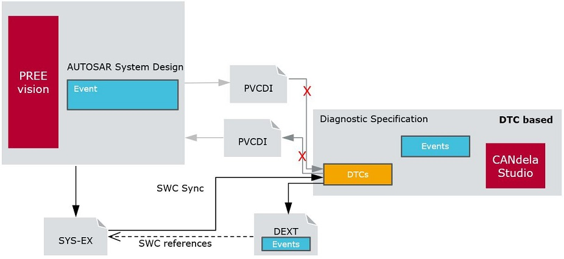
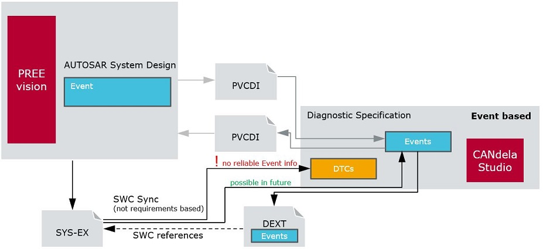

[ASR-D001] List of attributes,
| Object Type | Name (+ Qualifier, if different) | Type | Existing Category | Display | Enum Values | Default Value | Visible in separate table column | Description (+ Type restrictions, if any) |
|---|---|---|---|---|---|---|---|---|
| ECU | ||||||||
AUTOSAR Type (Autosar_Type) |
Enum | Autosar | Sort by Id | "None" 0 , "Classic" 1, "Adaptive" 2 | 0 | n/a | [ASR-D001_AUTOSAR_Type] Controlled by checkbox "Supports AUTOSAR" [DOCUI-R500] and the radio buttons [DOCUI-R530]. See details at the Document, [DOC-R530]. (CDS-71296 v13) | |
AUTOSAR Version (Autosar_Version) |
String | Autosar | n/a | [ASR-D001_AUTOSAR_Version] Controlled by the AUTOSAR "Version" [DOCUI-R540] (CDS-71296 v13). See details at the Document, [DOC-R540]. | ||||
MaxNumberOfDynDefinedDidReferences |
Unsigned | UDS | Decimal | 5 | n/a | [ASR-D001_MaxDyn] Number of DIDs that can be defined dynamically, see AUTOSAR Diagnostic Extract Export. | ||
Periodic Rate (Slow) in ms (Periodic_Rate_Slow_in_ms) |
Unsigned | UDS | Decimal | 1000 | n/a | [ASR-D001_Periodic_Rate_Slow_in_ms] Only exported if Service 0x2A with transmissionMode 0x01 (sendAtSlowRate) is supported. See [DEXT-R505]. | ||
Periodic Rate (Medium) in ms (Periodic_Rate_Medium_in_ms) |
Unsigned | UDS | Decimal | 100 | n/a | [ASR-D001_Periodic_Rate_Medium_in_ms] Only exported if Service 0x2A with transmissionMode 0x02 (sendAtMediumRate) is supported. See [DEXT-R505]. | ||
Periodic Rate (Fast) in ms (Periodic_Rate_Fast_in_ms) |
Unsigned | UDS | Decimal | 20 | n/a | [ASR-D001_Periodic_Rate_Fast_in_ms] Only exported if Service 0x2A with transmissionMode 0x03 (sendAtFastRate) is supported. See [DEXT-R505]. | ||
DDDID check per source ID (DDDID_check_per_source_ID) |
Enum | UDS | Sort by ID | false 0, true 1 | false | n/a | [ASR-D001_DDDID_check_per_source_ID] Perform checks for session, security and mode dependencies per source DID (in DID range 0xF200 to 0xF3FF), while reading DDDIDs via UDS service 0x22 or 0x2A. Only relevant for DEXT export if the document uses UDS 0x2C. | |
DDDID configuration storage (DDDID_configuration_storage) |
Enum | UDS | Sort by ID | volatile 0, non volatile 1 | volatile | n/a | [ASR-D001_DDDID_configuration_storage] Defines whether DDDID definition is handled as nonvolatile information. Only relevant for DEXT export if the document uses UDS 0x2C. | |
SynchronizationAttribute |
String | ODX | RequirementsId (use "SYNCHELEMENT" if no "RequirementsId" attribute exists but a "SYNCHELEMENT" attribute exists) | n/a | [ASR-D001_SynchronizationAttribute] | |||
| Interface | (from CDS-40957 Star3 ComParam) | |||||||
DiagnosticConnectionRef |
String | Autosar | n/a | [ASR-D001_DiagnosticConnectionRef] In the DEXT, specifies which TP Connection DCM uses, see [DEXT-R260]. Since v13 (CDS-72002) . | ||||
DiagnosticProtocolPriority |
Unsigned | Autosar | Decimal | 4 | n/a | [ASR-D001_DiagnosticProtocolPriority] In the DEXT, specifies the priority of the diagnostic tester, see [DEXT-R260]. Since v13 (CDS-72002). Before v13, exported to DEXT depending on the value of the document property "Diagnostics Based on" [DOC-R110] . | ||
| DIDs | ||||||||
RequirementsId |
String | Editor | [ASR-D001_DIDRequirementsId] (1) Imported via requirements CSV (e.g. from PREEvision) and evaluated in SWC-Sync, not used by DEXT Export. | |||||
| Diagnostic Instance | ||||||||
ASR UUID (ASR_UUID) |
String | Autosar | 0 | [ASR-D001_ASR_DiagInstUUID] UUID of the synchronized AUTOSAR element which corresponds to the diagnostic object, used by requirement-less SWC-Sync (CDS-71926 v13). | ||||
Instance Type (Instance_Type) |
String | Autosar | 1 | [ASR-D001_Instance_Type]. Only at IO Control, Routine Control (detected by UDS ServiceID 0x2F (IOControl) / 0x31 (Routine). Usage: see (1) above. | ||||
MaxAttemptsToDelay |
Unsigned | UDS | Decimal | 3 | [ASR-D001_MaxAttemptsToDelay] Used for DIAGNOSTIC-SECURITY-LEVEL in in AUTOSAR Diagnostic Extract Export, see [DEXT-R420]. Only at Security Access (detected by UDS Service ID 0x27). | |||
Obsoleted: MaxAttemptsToLock |
Unsigned | UDS | Decimal | 3 | [ASR-D001_MaxAttemptsToLock]. Only at Security Access (detected by UDS Service ID 0x27). No more used in recent DEXT Export; no more created by checkbox "Attributes for AUTOSAR Diagnostic Extract export" in dialog File | Properties | Document Info [DOCUI-R500] (CDS-70966 v11). For use with CANdelaStudio versions before v11, see [ASR-D090] below. | |||
DelayTimeMs |
Unsigned | UDS | Decimal | 10000 | [ASR-D001_DelayTimeMs] Used for DIAGNOSTIC-SECURITY-LEVEL in in AUTOSAR Diagnostic Extract Export, see [DEXT-R425]. Only at Security Access (detected by UDS Service ID 0x27). | |||
DelayTimeOnPowerOnMs |
Unsigned | UDS | Decimal | 0 | [ASR-D001_DelayTimeOnPowerOnMs] Used for DIAGNOSTIC-SECURITY-LEVEL in in AUTOSAR Diagnostic Extract Export, see [DEXT-R250]. Only at Security Access (detected by UDS Service ID 0x27). | |||
RequirementsId |
String | Editor | [ASR-D001_DiagInstRequirementsId] Usage: see (1) above. | |||||
ASR SWC ServiceDependency Ref (ASR_SWC_ServiceDependency_Ref) |
String | Autosar | 0 | [ASR-D001_ASR_SWC_DIServiceDependency_Ref] See details [ASR-D030] below. | ||||
Obsoleted at diagnostic instance: ASR SWC DataElement Ref (ASR_SWC_DataElement_Ref) |
String | Autosar | 0 | [ASR-D001_ASR_SWC_DIDataElement_Ref] Not used in DEXT export, see [ASR-D090] below. | ||||
| Data Object / Bitfield | ||||||||
ASR SWC ServiceDependency Ref (ASR_SWC_ServiceDependency_Ref) |
String | Autosar | 0 | [ASR-D001_ASR_SWC_DOServiceDependency_Ref] The attribute holds info about a Client/Server DID port (CDS-72028 v13). See attribute details [ASR-D030] below. | ||||
ASR SWC DataElement Ref (ASR_SWC_DataElement_Ref) |
String | Autosar | 0 | [ASR-D001_ASR_SWC_DODataElement_Ref] See details [ASR-D040] below. | ||||
ASR UUID (ASR_UUID) |
String | Autosar | 0 | [ASR-D001_ASR_UUID] UUID of the synchronized AUTOSAR element which corresponds to the diagnostic object, used by requirement-less SWC-Sync (CDS-71423 v12). | ||||
RequirementsId |
String | Editor | [ASR-D001_DORequirementsId] Usage: see (1) above. | |||||
| DTC | See Mapping SWC with DTC vs. Event [ASR-D050] | |||||||
ASR SWC ServiceDependency Ref (ASR_SWC_ServiceDependency_Ref) |
String | Autosar | 0 | [ASR-D001_ASR_SWC_DTCServiceDependency_Ref] See details [ASR-D030] below. | ||||
Obsoleted at DTC: ASR SWC DataElement Ref (ASR_SWC_DataElement_Ref) |
String | Autosar | 0 | [ASR-D001_ASR_SWC_DTCDataElement_Ref] Not used in DEXT export, see [ASR-D090] below. | ||||
RequirementsId |
String | Editor | [ASR-D001_DTCRequirementsId] | |||||
| Event | See Mapping SWC with DTC vs. Event [ASR-D050] | Event see [EV-R020] | ||||||
ASR SWC ServiceDependency Ref (ASR_SWC_ServiceDependency_Ref) |
String | Autosar | 0 | [ASR-D001_ASR_SWC_EvServiceDependency_Ref] See details [ASR-D030] below. (CDS-71544 v13) | ||||
| Operation Cycle | See Mapping SWC with DTC vs. Event [ASR-D050] | Operation Cycle see [EV-R500] | ||||||
ASR SWC ServiceDependency Ref (ASR_SWC_ServiceDependency_Ref) |
String | Autosar | 0 | [ASR-D001_ASR_SWC_OpcServiceDependency_Ref] See details [ASR-D030] below. (CDS-71544 v13) | ||||
| Indicator | See Mapping SWC with DTC vs. Event [ASR-D050] | Indicator see [EV-R600] | ||||||
ASR SWC ServiceDependency Ref (ASR_SWC_ServiceDependency_Ref) |
String | Autosar | 0 | [ASR-D001_ASR_SWC_IndServiceDependency_Ref] See details [ASR-D030] below. (CDS-71936 v13) | ||||
| Condition | See Mapping SWC with DTC vs. Event [ASR-D050] | Condition see [EV-R700] | ||||||
ASR SWC ServiceDependency Ref (ASR_SWC_ServiceDependency_Ref) |
String | Autosar | 0 | [ASR-D001_ASR_SWC_CondServiceDependency_Ref] See details [ASR-D030] below. Note: the attribute is used only for Condition [EV-R700], not for Condition Group [EV-R800], since PREEvision supports service dependency references only for Conditions. (CDS-71544 v13) | ||||
| Data Type | ||||||||
ASR Encoding (ASR_Encoding) |
String | Autosar | [ASR-D001_ASR_Encoding] "BOOLEAN" or empty. Used in AUTOSAR Diagnostic Extract export to set AUTOSAR encoding to BOOLEAN which is not available in CANdela. Only at "raw value" and "text table" data type. "BOOLEAN" or |
[ASR-D010] Attributes Exist :=
[ASR-D020] special qualifiers:
[ASR-D030] ASR SWC ServiceDependency Ref
The instance reference is coded using the following syntax:
Value ::=
"RCR:"<value of ROOT-CONTEXT-REF><blank>
[
"CSCPR:"<value of CONTEXT-SW-COMPONENT-PROTOTYPE-REF>[,<value of CONTEXT-SW-COMPONENT-PROTOTYPE-REF>]*<blank>
| ["CSCPR:"<value of CONTEXT-SW-COMPONENT-PROTOTYPE-REF><blank>]*
]
"TSSDR:"<value of TARGET-SWC-SERVICE-DEPENDENCY-REF>Example (single blank replaced by a line-break for readability):
RCR:/SYSTEM/Systems/RootSoftwareComposition
CSCPR:/SwComponentTypes/COP/ECU_Composition/KBiCSCPR:/SwComponentTypes/COP/KB/SWC_DIAG_A6
TSSDR:/SwComponentTypes/COP/SWC_DIAG_A6/XDIS_curfy7xyg/SD_S_DRS_RoutineName1Note:
<blank> is required before and behind the entire CSCPR: list, but not within.KBiCSCPR: is not ambiguous, since the keyword CSCPR: cannot be part of the preceding reference.[ASR-D050] Mapping an SWC with a DTC or with an Event
Document Supports Events:

Event ServiceDependency Ref with DTC Based Document
Document Does not Support Events:

Event ServiceDependency Ref with Event Based Document
[ASR-D040] ASR SWC DataElement Ref
The instance reference is coded in the following syntax:
Value ::=
"CRCR:"<value of CONTEXT-ROOT-COMPOSITION-REF><blank>
["CCR:"<value of CONTEXT-COMPONENT-REF>]*<blank>
"CPR:"<value of CONTEXT-PORT-REF><blank>
"TDPR:"<value of TARGET-DATA-PROTOTYPE-REF>(note the
<blank>outside the repetition)
Example (line-breaks inserted for readability):
CRCR:/SYSTEM/Systems/RootSoftwareComposition
CCR:/SwComponentTypes/COP/ECU_Composition/KBi
CCR:/SwComponentTypes/COP/KB/SWC_Diag_A6
CPR:/SwComponentTypes/COP/SWC_Diag_A6/P_DiagDisplayables
TDPR:/PortInterfaces/COP/IP_diagnostic_disps_SWC_A6/DiagDisplayable1[ASR-D090] Obsoleted attributes (former [DOCUI-D500])
ASR_SWC_DataElement_Ref)